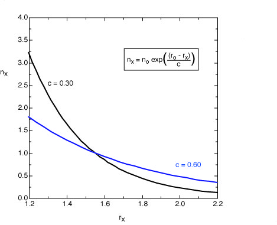
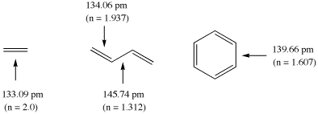

Pauling bond order
The degree or order of bonding between two atoms cannot only be determined
through analysis of the molecular wavefunction, but also through using the
bond distance/bond order correlation established by Linus Pauling. This
empirical scheme is particularly useful for comparing calculated
and experimentally determined data, but also has some value as a "post factum"
analysis method. The approach is based on the assumption that bond orders
vary exponentially with bond distances. This can be expressed in a straightforward
manner with equation (1):
nx = no EXP((ro - rx)/c)
(1)
In equation (1) the bond order nx of a bond of length rx
is a function of a reference bond of length ro, whose bond order is
defined as no. The constant c determines, how steeply the bond orders
change with bond distances. Very frequently the reference bond distance is that
of a single bond with no=1.0.

The original equation suggested by Pauling for single and double bonds uses
a value of c = 0.3 (black line). For the analysis of bond orders in transition states
this value leads to bond orders which are too small. For these structures
a value of c = 0.6 appears to be more appropriate (blue line).
The calculation of bond orders n for ground state molecules will be demonstrated using
ethylene, butadiene, and benzene as example. The following structural data have been
calculated for these systems at the Becke3LYP/6-31G(d) level of theory (distances in pm):

The double bond in ethylene is used here as the reference systems for bonds with
bond order 2 at a bond length of 133.09 pm. Using Paulings original expression (c = 0.3)
the bond orders in butadiene amount to 1.937 (C1-C2) and 1.312 (C2 - C3), and to 1.607
for benzene. It is clear from this example, that the calculated bond orders always
depend on the chosen reference system!
references
L. Pauling,
"Atomic Radii and Interatomic Distances in Metals"
J. Am. Chem. Soc. 1947, 69, 542 - 553.
J. Wilkie, I. H. Williams,
"Transition-State Structural Variation in a Model for Carbonyl
Reduction by Lactate Dehydrogenase: Computational
Validation of Empirical Predictions Based upon
Albery-More O'Ferrall-Jencks Diagrams"
J. Am. Chem. Soc. 1992, 114, 5423 - 5425.
K. N. Houk, S. M. Gustavson, K. A. Black,
"Theoretical Secondary Kinetic Isotope Effects and the
Interpretation of Transition State Geometries. 1. The Cope
Rearrangement"
J. Am. Chem. Soc. 1992, 114, 8565 - 8572.
S. S. Glad, F. Jensen,
"Kinetic Isotope Effects and Transition State Geometries.
A Theoretical Investigation of E2 Model Systems"
J. Org. Chem. 1997, 62, 253 - 260.
last changes: 29.01.2005, HZ
questions & comments to: zipse@cup.uni-muenchen.de